Использование приложения «Календарь»
Примечание
Приложение «Календарь» по умолчанию устанавливается вместе с Nextcloud Hub, но его можно отключить. Чтобы включить его, обратитесь к администратору.
Приложение «Календарь» Nextcloud работает так же, как другие календарные приложения: календари и события Nextcloud можно синхронизировать с ними.
При первом открытии приложения «Календарь» для вас автоматически создаётся первый календарь по умолчанию.
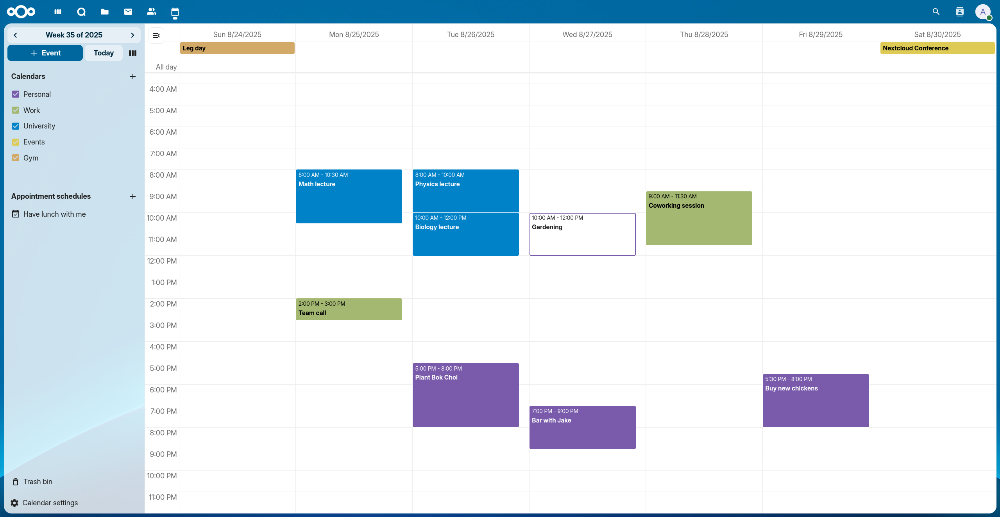
Управление календарями
Создать новый календарь
Если вы не собираетесь переносить в новый календарь данные из прежнего, создайте новый календарь.

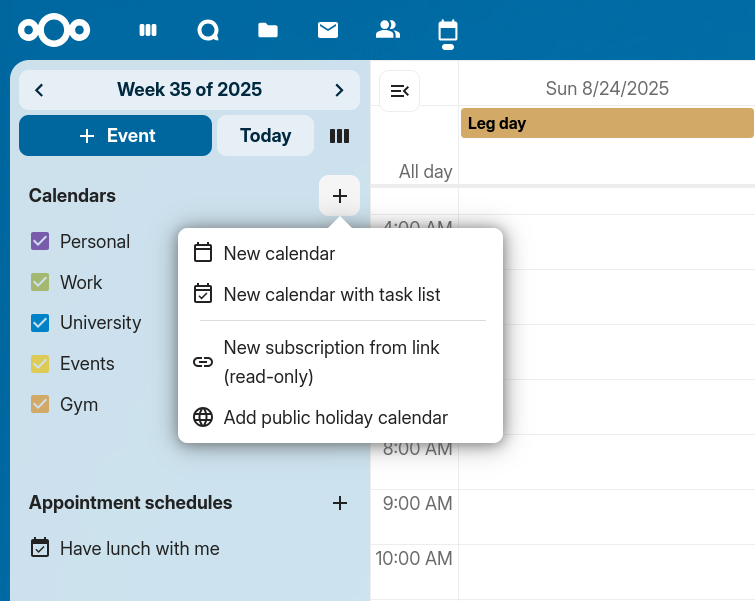
Нажмите
+ Создать календарьв левой боковой панели.Введите название нового календаря, например «Работа», «Дом» или «Планирование маркетинга».
После нажатия на галочку календарь будет создан: его можно синхронизировать с вашими устройствами, наполнять новыми событиями и открывать для друзей и коллег.

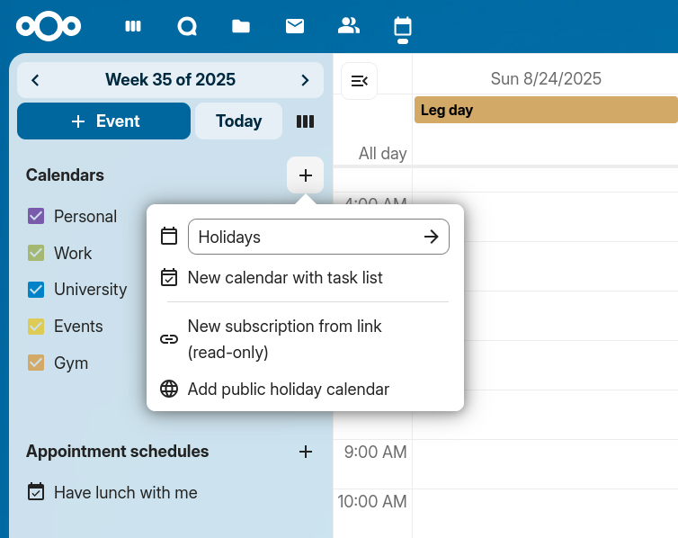
Импортировать календарь
Чтобы перенести календарь со всеми событиями на сервер Nextcloud, лучше всего импортировать его.

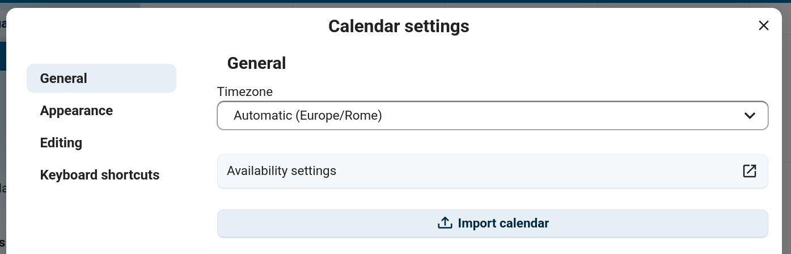
Нажмите значок Параметры календаря.
Нажмите
Импортировать календарьв разделеОсновные, затем выберите на устройстве один или несколько файлов календаря для загрузки.Выберите
Календарь для импорта.Загрузка может занять некоторое время, в зависимости от размера импортируемого календаря. Под надписью «Параметры календаря» появится синий индикатор выполнения.
Примечание
Приложение «Календарь» поддерживает только файлы .ics формата iCalendar, определённого в RFC 5545.
Импортировать событие/Добавить событие .ics
Отдельные события часто распространяются в виде файлов .ics (иногда с помощью кнопки с названием «iCal», «Apple Calendar» или «Outlook»). Их можно импортировать в приложение «Календарь» Nextcloud тем же способом, что и целый календарь.
Нажмите значок Параметры календаря.
После нажатия кнопки
Импортировать календарьможно выбрать на устройстве один или несколько файлов.icsдля загрузки. Файлы с одним событием добавляются в выбранный календарь.Выберите
Календарь для импорта.Загрузка может занять некоторое время, в зависимости от размера импортируемого календаря или события. Под надписью «Параметры календаря» появится синий индикатор выполнения.
Примечание
Приложение «Календарь» поддерживает только файлы .ics формата iCalendar, определённого в RFC 5545.
Редактировать, экспортировать или удалить календарь
Иногда нужно изменить цвет или название ранее созданного или импортированного календаря. Календарь можно также экспортировать на локальный жёсткий диск или удалить навсегда.
Примечание
Помните: удаление календаря необратимо. После удаления календарь можно восстановить только из локальной резервной копии.
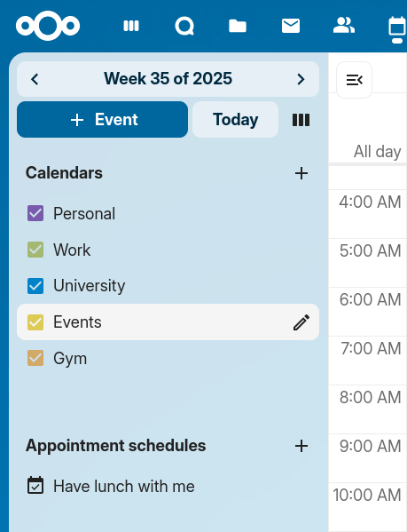
Нажмите значок «ручка» рядом с нужным календарём. Откроется всплывающее окно, в котором можно изменить название и цвет календаря; там же находятся кнопки удаления и экспорта календаря.
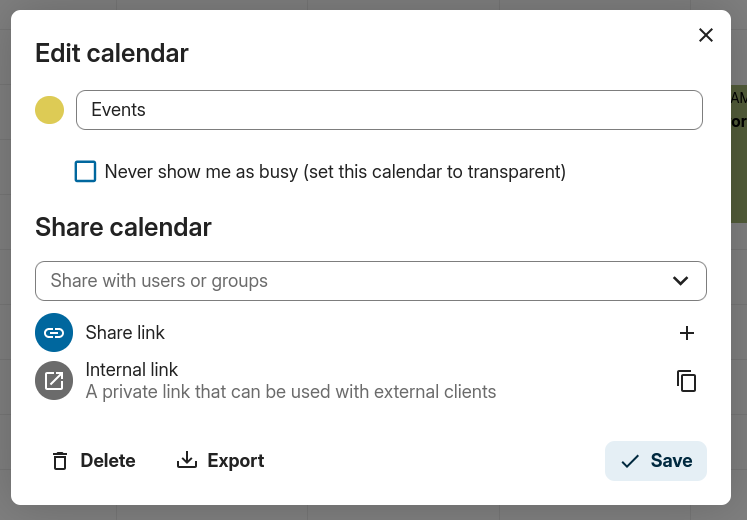
Прозрачность календаря
Установите флажок «Никогда не показывать меня занятым (сделать этот календарь прозрачным)», чтобы определить, учитываются ли события этого календаря при расчёте занятости. Если флажок установлен, события этого календаря не учитываются, и ваше расписание всегда считается свободным независимо от параметров событий.
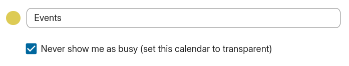
Делегирование календаря
Добавлено в версии 34.0.0.
В параметрах приложения можно делегировать свои календари другим пользователям, чтобы они управляли ими за вас. Можно предоставить доступ только для чтения, если они должны лишь просматривать календарь, или доступ с правом записи, если они должны создавать, изменять и удалять события.
Делегирование календарей также работает в других клиентах с поддержкой делегирования календарей.
По умолчанию получатели делегирования не добавляются как участники событий, которые они создают для делегирующего: организатором события остаётся делегирующий. Если к событию привязано обсуждение в приложении «Конференции», и делегирующий, и получатель делегирования являются модераторами этого обсуждения.
Примечание
Сейчас делегирование учётной записи делегирует все календари. Делегирование отдельных календарей пока не поддерживается.
Федеративный общий доступ к календарю
Добавлено в версии 32.0.0.
Изменено в версии 33.0.0: Федеративный общий доступ к календарю поддерживает чтение и запись.
Поделиться календарём с пользователем другого сервера Nextcloud можно так же, как с локальным пользователем. Разница в том, что получателя нужно указывать по федеративному идентификатору в формате <username>@<instance> (например, alice@cloud.example.com).
Начиная с Nextcloud 33 федеративный общий доступ поддерживает чтение и запись: удалённые пользователи могут создавать, изменять и удалять события в общем календаре. В Nextcloud 32 такой доступ был только для чтения.
Публикация календаря
Календарь можно опубликовать по общедоступной ссылке, чтобы внешние пользователи могли его просматривать (только чтение). Чтобы создать общедоступную ссылку, откройте меню общего доступа календаря и нажмите «+» рядом с «Поделиться ссылкой». Созданную ссылку можно скопировать в буфер обмена или отправить по эл. почте.
Также есть «код для встраивания» — HTML-фрейм (iframe) для вставки календаря на общедоступные страницы.
Несколько календарей можно объединить, добавив их уникальные токены в конец ссылки для встраивания. Токен находится в конце общедоступной ссылки каждого календаря. Полный адрес будет выглядеть так: https://cloud.example.com/index.php/apps/calendar/embed/<token1>-<token2>-<token3>
Чтобы изменить вид или дату встроенного календаря по умолчанию, нужен URL вида https://cloud.example.com/index.php/apps/calendar/embed/<token>/<view>/<date>. В нём нужно заменить следующие переменные:
<token>— токен календаря,<view>— одно из значенийdayGridMonth,timeGridWeek,timeGridDay,listMonth,listWeek,listDay. По умолчанию используетсяdayGridMonth, а чаще всего —listMonth.<date>—nowили любая дата в формате<year>-<month>-<day>(например,2019-12-28).
На общедоступной странице пользователи могут получить ссылку для подписки на календарь и экспортировать весь календарь напрямую.
Виджет календаря
Календари можно встраивать в поддерживаемые приложения, такие как Конференции, Заметки и др. Чтобы встроенный календарь могли просматривать (только чтение) все пользователи, поделитесь общедоступной ссылкой; чтобы он оставался закрытым, используйте внутреннюю ссылку.
Подписаться на календарь
Прямо в Nextcloud можно подписаться на календари iCal. Благодаря поддержке этого стандарта (RFC 5545) календарь Nextcloud совместим с Google Календарём, Apple iCloud и многими другими календарными серверами, с которыми можно обмениваться календарями, включая ссылки подписки на календари, опубликованные на других серверах Nextcloud (см. выше).
Нажмите
+ Создать календарьв левой боковой панели.Нажмите
+ Создать подписку по ссылке (только чтение).Введите или вставьте ссылку на общий календарь, на который нужно подписаться.
Готово. Подписки на календари будут регулярно обновляться.
Примечание
По умолчанию подписки обновляются раз в неделю. Администратор мог изменить этот параметр.
Подписаться на календарь праздников
Добавлено в версии 4.4: Nextcloud 25 или новее
Можно подписаться на календарь праздников (только для чтения), предоставляемый Thunderbird.
Нажмите
+ Создать календарьв левой боковой панели.Нажмите
+ Добавить календарь государственных праздников.Найдите свою страну или регион и нажмите
Подписаться.
Управление событиями
Создать новое событие
Событие можно создать щелчком в области, на которую оно запланировано. В дневном и недельном представлении календаря нужно щёлкнуть, протянуть курсор по промежутку времени, на который назначено событие, и отпустить кнопку мыши.
Кнопка с глобусом открывает выбор часового пояса. Для начала и окончания события можно выбрать разные часовые пояса — это удобно в поездках.
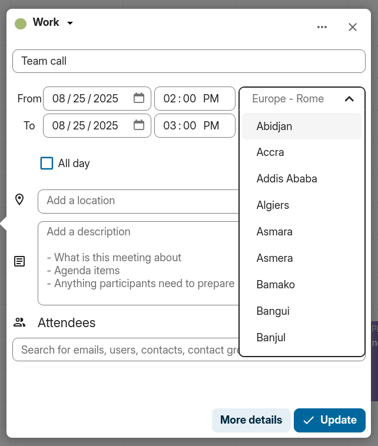
В месячном представлении достаточно один раз щёлкнуть по нужному дню.
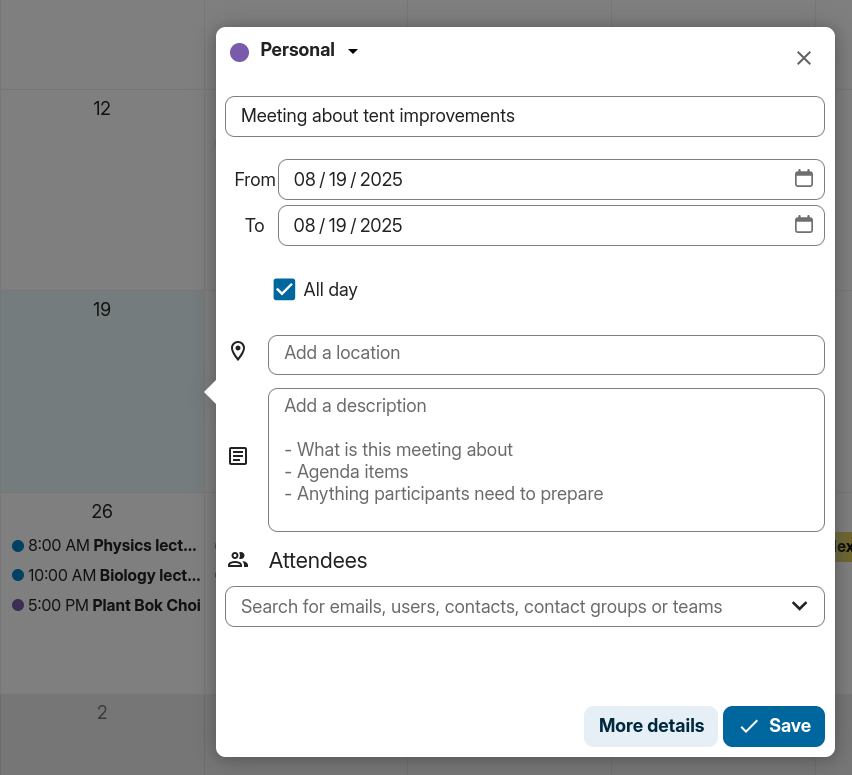
Затем введите название события (например, Встреча с Линусом), выберите календарь, в котором его нужно сохранить (например, Личное, Общественные мероприятия), проверьте и уточните интервал времени или отметьте событие как длящееся весь день. При желании укажите место и описание.
Чтобы изменить дополнительные сведения, такие как Участники или Напоминания, или сделать событие повторяющимся, нажмите кнопку Ещё: откроется расширенный редактор.
Добавить обсуждение в приложении «Конференции»
Чтобы включить в событие существующее обсуждение, нажмите «Добавить обсуждение в приложении „Конференции“». Чтобы увидеть список обсуждений, приложение «Конференции» должно быть включено. Новое обсуждение можно создать в этом же окне.
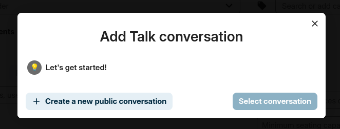
Примечание
Чтобы всегда открывать расширенный редактор вместо простого всплывающего окна, снимите флажок Включить упрощённый редактор в разделе Параметры приложения.
Чтобы создать событие, нажмите синюю кнопку Создать.
Изменить, продублировать или удалить событие
Чтобы изменить, продублировать или удалить событие, сначала щёлкните по нему.
После этого можно изменить все сведения о событии или открыть расширенный редактор, нажав Ещё.
Кнопка Обновить сохраняет изменения в событии. Чтобы отменить изменения, нажмите кнопку Закрыть во всплывающем окне или расширенном редакторе.
В расширенном виде трёхточечное меню рядом с названием события позволяет экспортировать событие в файл .ics или удалить его из календаря.
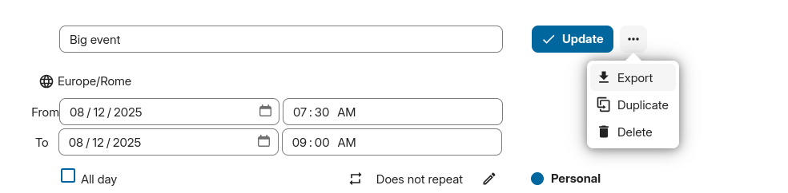
Совет
Удалённые события попадают в корзину, откуда их можно восстановить, если вы удалили событие случайно.
Экспортировать, дублировать или удалять события можно и в основном редакторе.
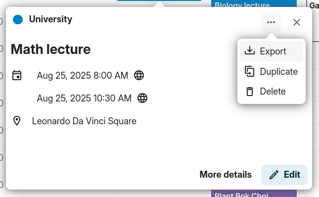
Пригласить участников на событие
К событию можно добавить участников, чтобы они узнали о приглашении. Участники получат приглашение по эл. почте и смогут подтвердить или отклонить своё участие. Участниками могут быть другие пользователи вашего сервера Nextcloud, контакты из адресных книг и люди, указанные по адресу эл. почты. Для каждого участника можно изменить уровень участия или отключить для него почтовые уведомления.

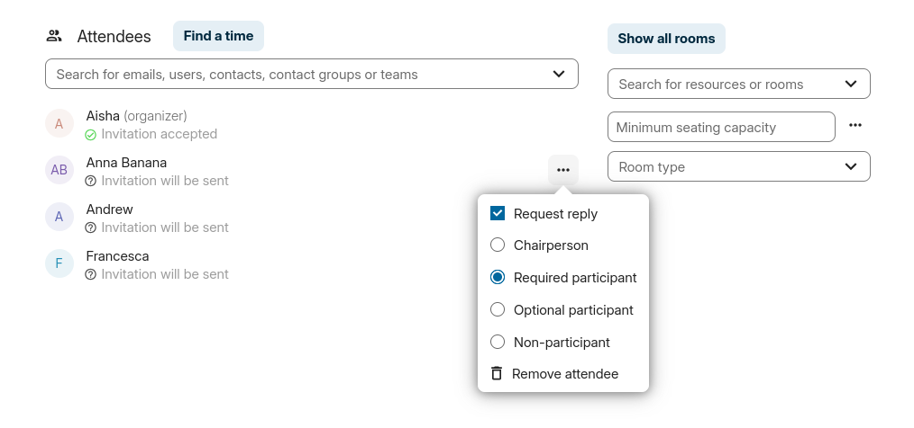
Изменено в версии 25.0.0: Ссылки для ответа в письмах участникам больше не позволяют добавить комментарий или пригласить на событие других гостей.
Совет
При добавлении других пользователей Nextcloud в качестве участников можно посмотреть их занятость (если она доступна) и выбрать наиболее подходящее время. Укажите свои рабочие часы, чтобы другие знали, когда вы свободны. Сведения о занятости доступны только для пользователей того же сервера Nextcloud.
Внимание
Администратор сервера должен настроить почтовый сервер на вкладке Основные параметры: с него будут отправляться приглашения.
Обозначения статуса приглашения (для участника):
Закрашенное событие: вы приняли приглашение
Зачёркивание: вы отказались
Полосы: под вопросом
Пустое событие: вы ещё не ответили
Если вы — организатор и все приглашённые отказались, событие будет пустым и со значком предупреждения.
Проверка занятости участников
Добавив участников, нажмите Найти время, чтобы открыть окно «Свободен / занят». В нём видно, когда у каждого участника есть другие события, что помогает выбрать время, свободное для всех.

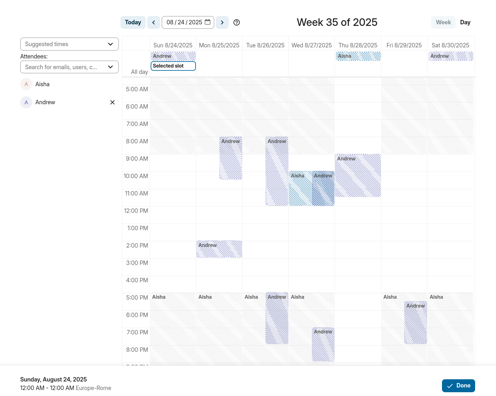
Ваши занятые интервалы показываются цветом вашего личного календаря, время отсутствия — серым, а занятость остальных участников — цветом их аватаров в расширенном редакторе.
Временной интервал для события можно выбрать прямо в календаре.
Назначение помещений и ресурсов для события
Как и участников, к событиям можно добавлять помещения и ресурсы. Система следит за тем, чтобы помещения и ресурсы не бронировались одновременно. Когда помещение или ресурс впервые добавляют к событию, оно показывается как принятое. Во всех последующих событиях на пересекающееся время такое помещение или ресурс будут показаны как отклонённые.
Примечание
Помещения и ресурсы управляются не самим Nextcloud, и приложение «Календарь» не позволяет добавлять или изменять ресурсы. Чтобы вы могли ими пользоваться, администратор должен установить и, возможно, настроить серверные части (бэкенды) ресурсов.
Доступность помещений
Добавлено в версии 5.0: Nextcloud 30 или новее
Если на сервере установлено приложение «Календарь комнат и ресурсов», в разделе Ресурсы можно найти Доступность помещений. Там перечислены все существующие помещения. Доступность помещения проверяется так же, как свободное время участников события.
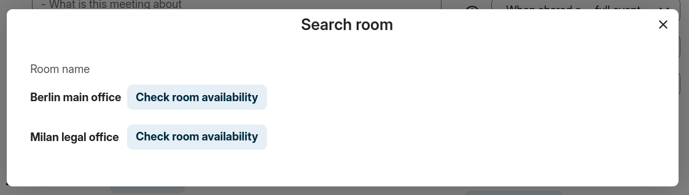
Добавить вложения к событиям
Вложения к событиям можно загрузить или добавить из файлов.

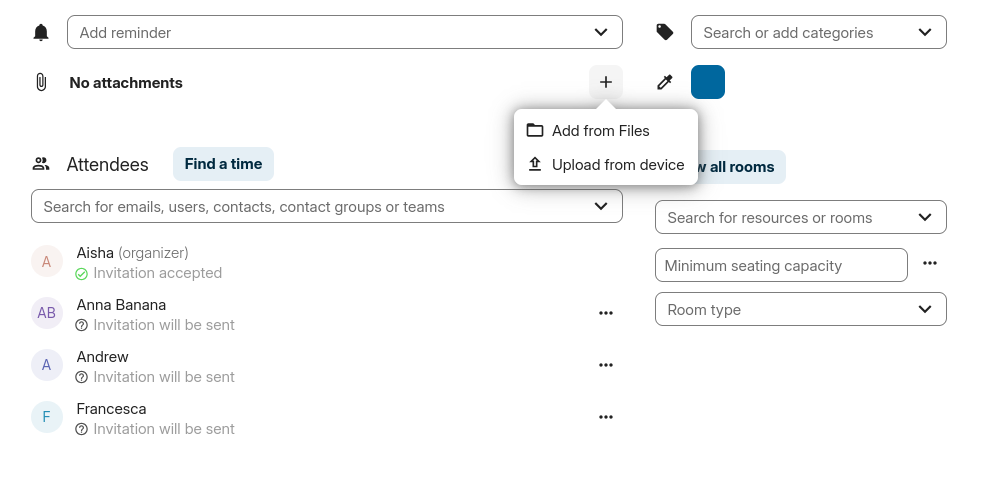
Примечание
Вложения можно добавлять при создании нового события или изменении существующего. По умолчанию новые загруженные файлы сохраняются в приложении «Файлы», в папке календаря в корне.
Папку для вложений можно изменить: откройте Параметры календаря и измените default attachments location.

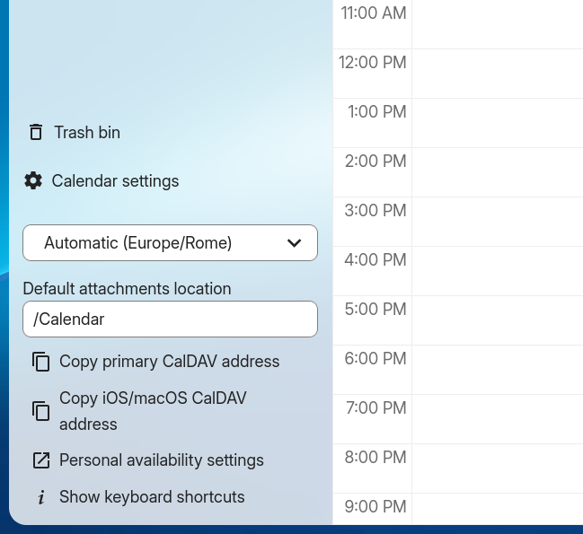
Настройка напоминаний
Напоминания позволяют получать уведомления перед наступлением события. Сейчас поддерживаются следующие способы уведомления:
Уведомления по эл. почте
Уведомления Nextcloud
Напоминания можно задать за определённое время до события или на конкретную дату. Чтобы все события календаря имели напоминание по умолчанию, настройте его в параметрах этого календаря.

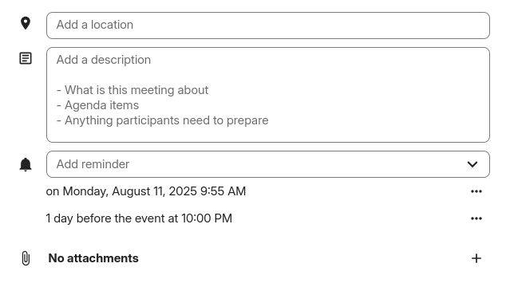
Примечание
Уведомления получают только владелец календаря и пользователи или группы, которым предоставлен доступ с правом записи. Если уведомления не приходят, хотя должны, возможно, администратор отключил их на сервере.
Примечание
Если календарь синхронизирован с мобильными устройствами или другими сторонними клиентами, уведомления могут показываться и там.
Настройка повторения
Событие можно сделать «повторяющимся»: оно будет происходить каждый день, неделю, месяц или год. Можно добавить правила: например, указать день недели или задать более сложное условие, скажем, каждая четвёртая среда месяца.
Можно также указать, когда повторение закончится.

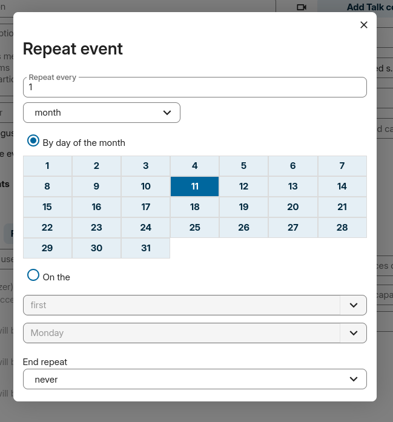
Корзина
Если удалить события, задачи или календарь в приложении «Календарь», данные не пропадают сразу: элементы помещаются в корзину, откуда удаление можно отменить. По истечении срока (по умолчанию 30 дней; администратор мог изменить этот параметр) элементы удаляются навсегда. При желании их можно удалить навсегда и раньше.
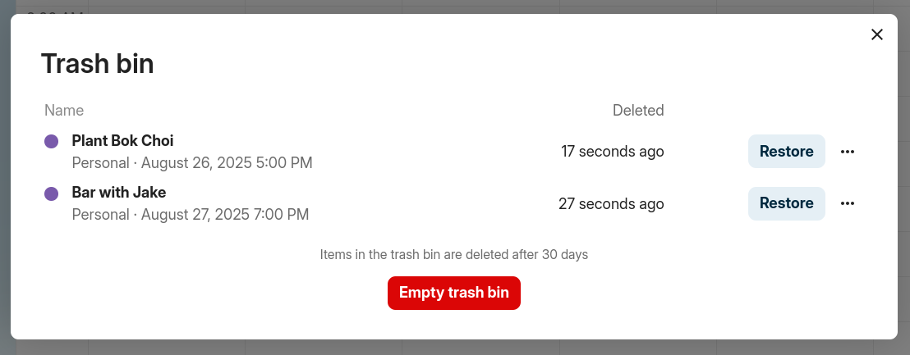
Кнопка Очистить корзину сотрёт всё содержимое корзины за один шаг.
Совет
Корзина доступна только в приложении «Календарь»: подключённые приложения не могут показать её содержимое. Однако события, задачи и календари, удалённые в подключённых приложениях, тоже попадают в корзину.
Автоматический статус пользователя
Если у вас запланировано событие календаря со статусом «ЗАНЯТО», ваш статус автоматически станет «На встрече», кроме случаев, когда вы выбрали «Не беспокоить» или «Невидимый». Статус можно в любой момент заменить собственным сообщением или задать для событий календаря значение «СВОБОДНО». Прозрачные календари игнорируются.
Ответ на приглашения
Отвечать на приглашения можно прямо в приложении. Щёлкните событие и выберите статус участия: принять приглашение, отклонить или принять предварительно.

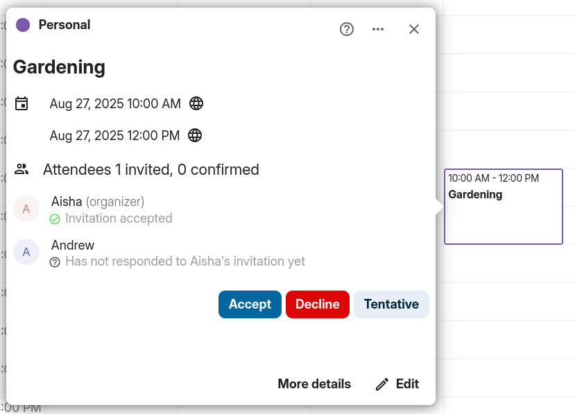
Вы также можете ответить на приглашение из расширенного редактора.

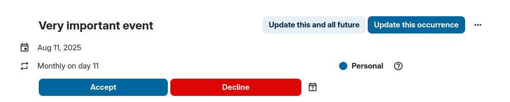
Доступность (рабочие часы)
Общую доступность независимо от запланированных событий можно задать в личных параметрах Nextcloud, в разделе «Приложения для совместной работы». Эти параметры учитываются в представлении занятости, когда вы планируете встречу с другими людьми в приложении «Календарь». Некоторые подключённые клиенты, например Thunderbird, тоже показывают эти данные.
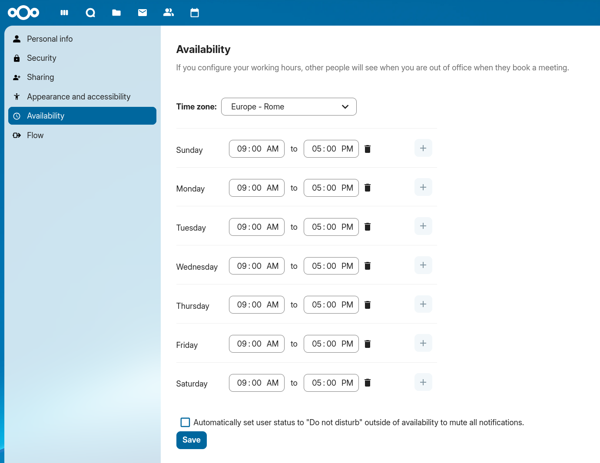
Помимо регулярной доступности, можно задать разовые отсутствия в разделе Отсутствие.
Календарь дней рождения
Календарь дней рождения создаётся автоматически и берёт дни рождения из ваших контактов. Изменить его можно только одним способом: указать даты рождения в контактах. Напрямую в приложении «Календарь» этот календарь не редактируется.
Примечание
Если календаря дней рождения нет, возможно, администратор отключил его на сервере.
Встречи
Начиная с Календаря v3 приложение может создавать слоты для встреч, которые бронируют другие пользователи Nextcloud, а также люди без учётной записи на сервере. Встречи позволяют гибко управлять тем, когда вы можете быть свободны. Не нужно обмениваться письмами, чтобы согласовать дату и время.
В этом разделе организатор — тот, кто владеет календарём и создаёт слоты для встреч, а участник — тот, кто бронирует один из слотов.
Создание конфигурации встречи
Организатор встреч открывает основной веб-интерфейс приложения «Календарь». В левой боковой панели есть раздел встреч, где можно открыть диалог создания новой встречи.
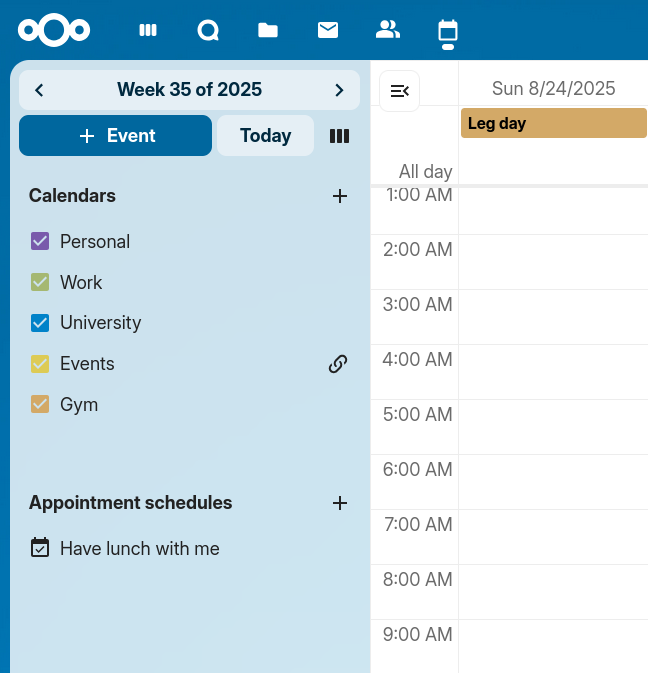
Основные сведения о каждой встрече: название, описывающее её суть (например, «Один на один», если организатор предлагает коллегам личный звонок), место проведения и более подробное описание.
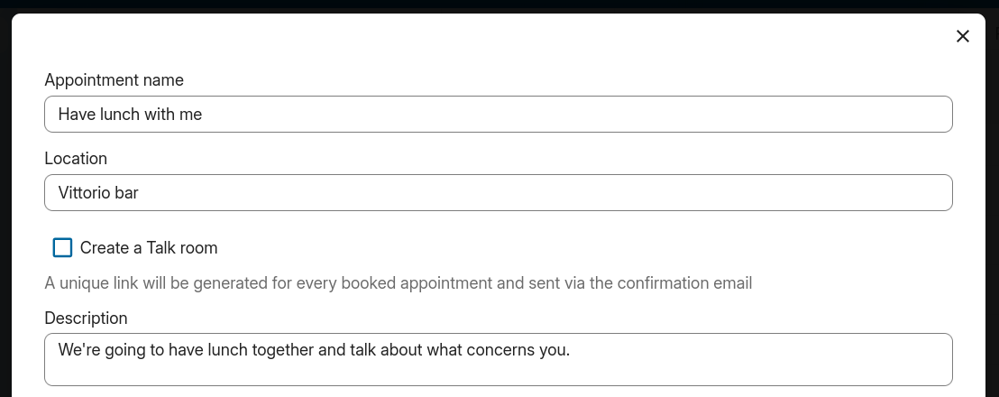
Продолжительность встречи выбирается из заданного списка. Затем задаётся шаг — интервал, с которым доступны возможные слоты. Например, слоты могут длиться час, но предлагаться с шагом 30 минут, и участник сможет записаться как на 9:00, так и на 9:30. Необязательные сведения о месте и описание дают участникам больше контекста. Каждая забронированная встреча записывается в один из ваших календарей, его можно выбрать. Встречи бывают общедоступными и частными. Общедоступные встречи можно найти на странице профиля пользователя Nextcloud. Частные встречи доступны только тем, кто получил секретный URL-адрес.
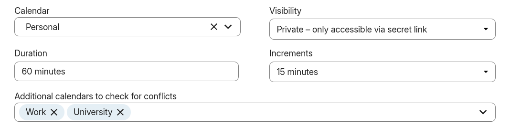
Примечание
Участникам будут показаны только слоты, которые не конфликтуют с существующими событиями в ваших календарях.
Организатор может указать, в какое время недели обычно можно записаться на слот. Это могут быть рабочие часы или любой другой индивидуальный график.
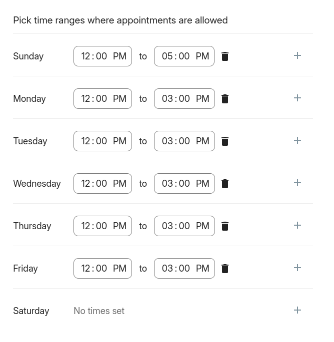
Некоторым встречам нужно время на подготовку, например если вы встречаетесь на выезде и вам нужно добраться до места. Организатор может задать время, которое должно быть свободно: доступны будут только слоты, не конфликтующие с другими событиями во время подготовки. Можно также задать время, которое должно быть свободно после каждой встречи. Чтобы участник не мог записаться в слишком короткий срок, можно настроить, насколько скоро может состояться ближайшая встреча. Максимальное число слотов в день ограничивает количество встреч, которые могут забронировать участники.
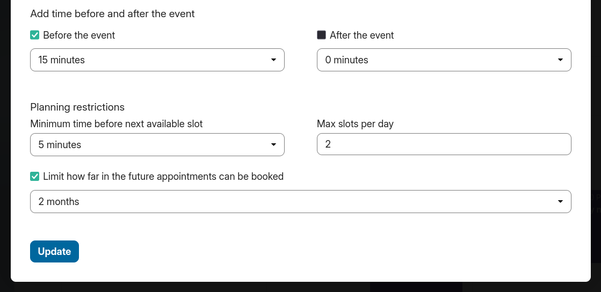
Настроенная встреча появится в левой боковой панели. В трёхточечном меню её можно предварительно просмотреть. Ссылку на встречу можно скопировать и отправить нужным участникам либо позволить им найти общедоступную встречу на странице профиля. Конфигурацию встречи также можно изменить или удалить.
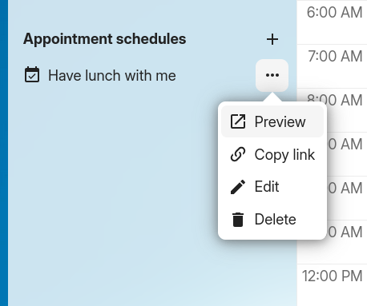
Бронирование встречи
На странице бронирования участник видит название, место, описание и продолжительность встречи. Для выбранного дня показывается список всех возможных слотов. Список может быть пустым в дни, когда нет свободных слотов, слишком много конфликтов или достигнут дневной максимум забронированных встреч.

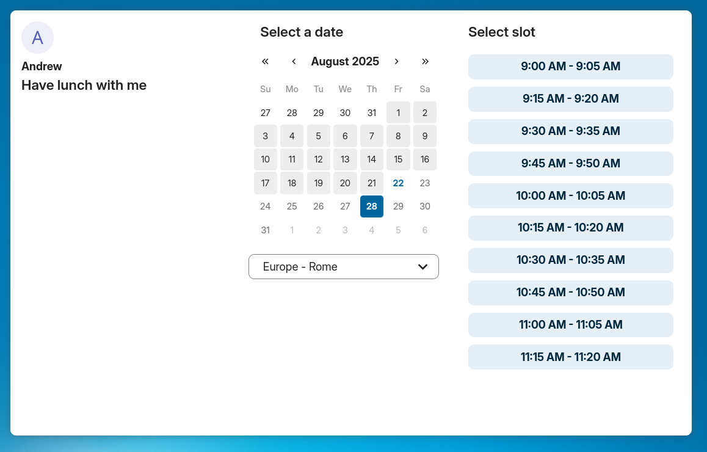
Для бронирования участник должен ввести имя и адрес эл. почты. При желании можно добавить комментарий.

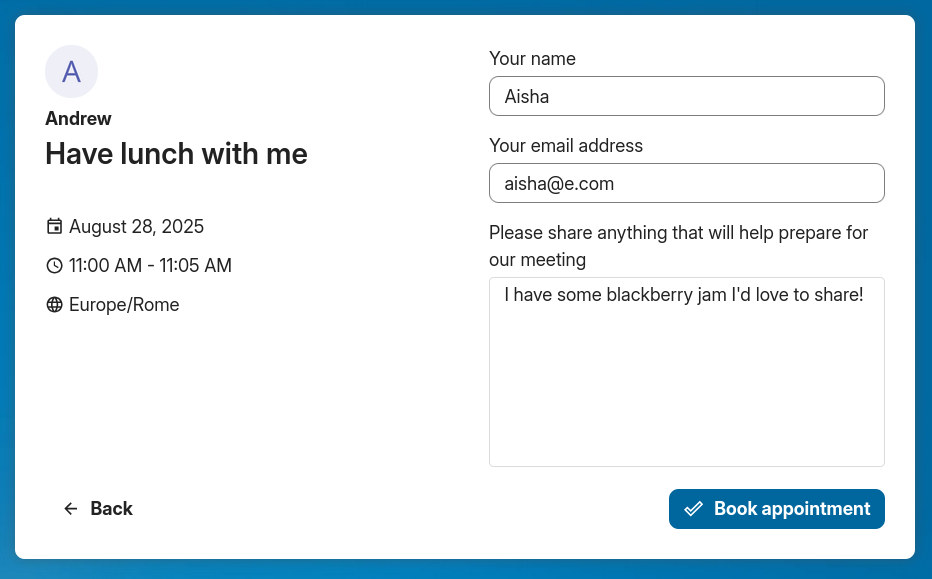
После успешного бронирования участнику показывается диалог подтверждения.
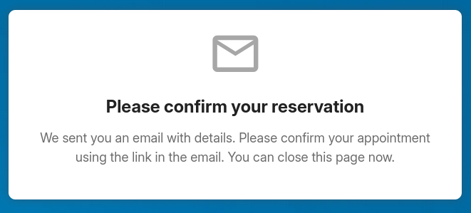
Чтобы убедиться, что адрес эл. почты участника действителен, ему отправляется письмо с подтверждением.
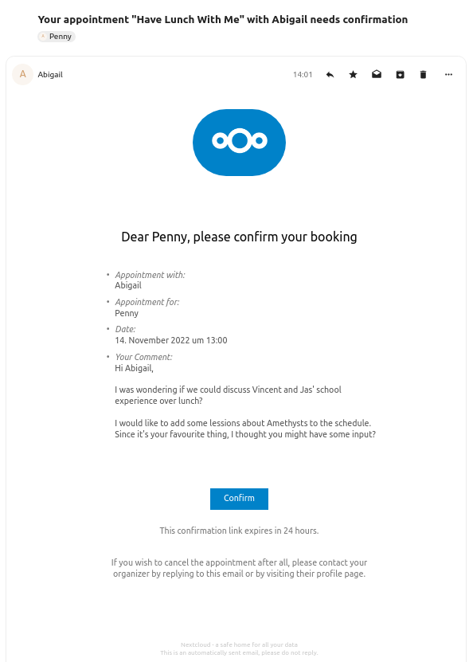
Запись на встречу принимается и передаётся организатору, только когда участник перейдёт по ссылке подтверждения из письма.
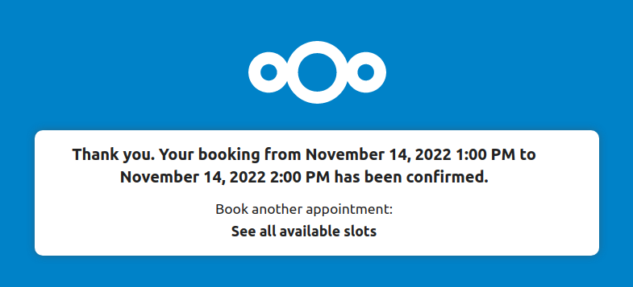
Участник получит ещё одно письмо с подтверждением сведений о своей встрече.
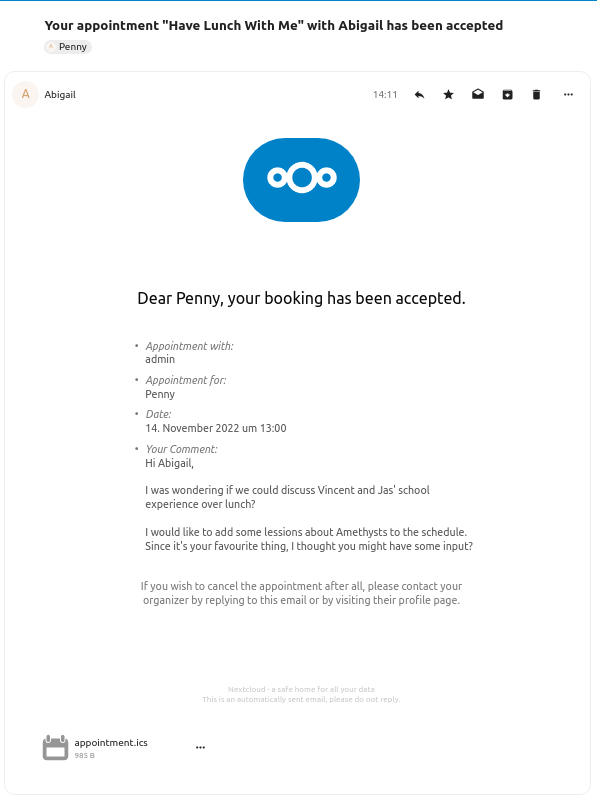
Примечание
Пока слот не подтверждён, он остаётся доступным для бронирования. До подтверждения его может забронировать другой пользователь, подтвердивший бронирование раньше. В этом случае система обнаружит конфликт и предложит выбрать другой слот.
Работа с забронированной встречей
После бронирования организатор найдёт в своём календаре событие со сведениями о встрече и участником.
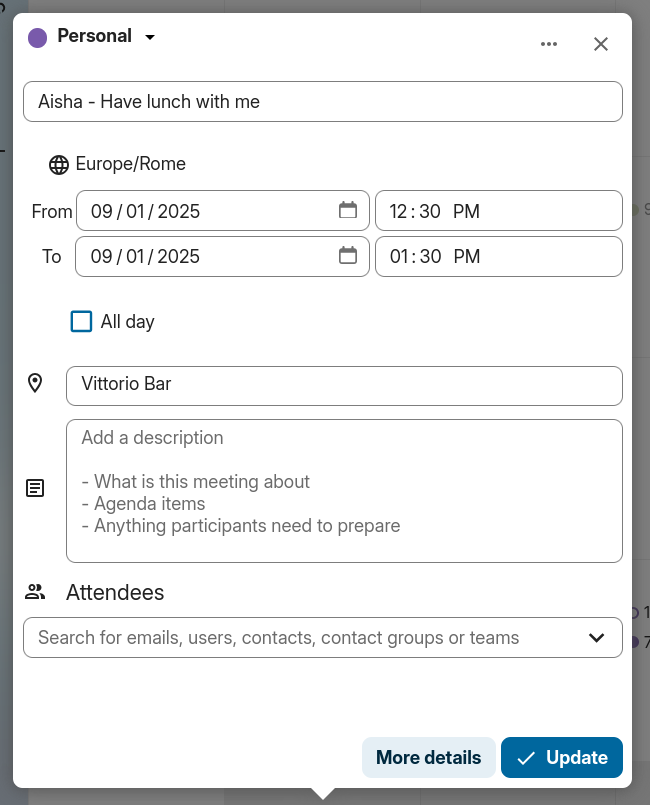
Если для встречи включены параметры «Добавить время до события» или «Добавить время после события», в календаре организатора они появятся отдельными событиями.
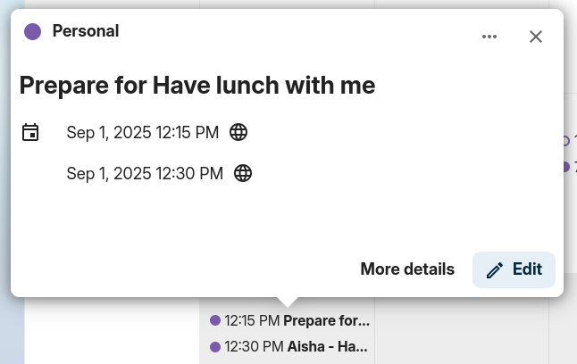
Как и при любом другом событии с участниками, изменения и отмена вызывают уведомление на эл. почту участника.
Чтобы отменить встречу, участник должен связаться с организатором: тот отменит или удалит событие.
Создать обсуждение в приложении «Конференции» для забронированных встреч
Обсуждение в приложении «Конференции» для забронированной встречи можно создать прямо из приложения «Календарь». Нужный вариант есть в окне «Создать встречу». Если его включить, для каждой забронированной встречи создаётся уникальная ссылка, которая отправляется в письме с подтверждением.
Предложения встреч
Добавлено в версии 6.0: Nextcloud 32 или новее
Найти время для встречи группы участников бывает непросто. Начиная с Календаря v6 можно создавать предложения времени встречи: вместо того чтобы просто бронировать время или искать свободное в представлении занятости, участники голосуют за один из предложенных вариантов. Затем организатор изучает предпочтения участников и выбирает наиболее подходящее время.
Управление предложениями
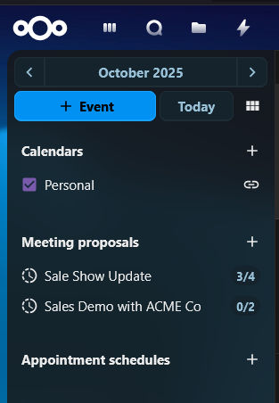
В списке предложений в левой боковой панели показаны все созданные пользователем предложения: название, число ответивших участников и признак того, ответили ли все.
Трёхточечное меню рядом с предложением позволяет изменить, удалить или просмотреть его.
Создание предложения
Чтобы создать предложение, нажмите значок плюса рядом с заголовком «Предложенные встречи» в верхней части списка предложений. Откроется окно, где вводятся все сведения о предлагаемой встрече.
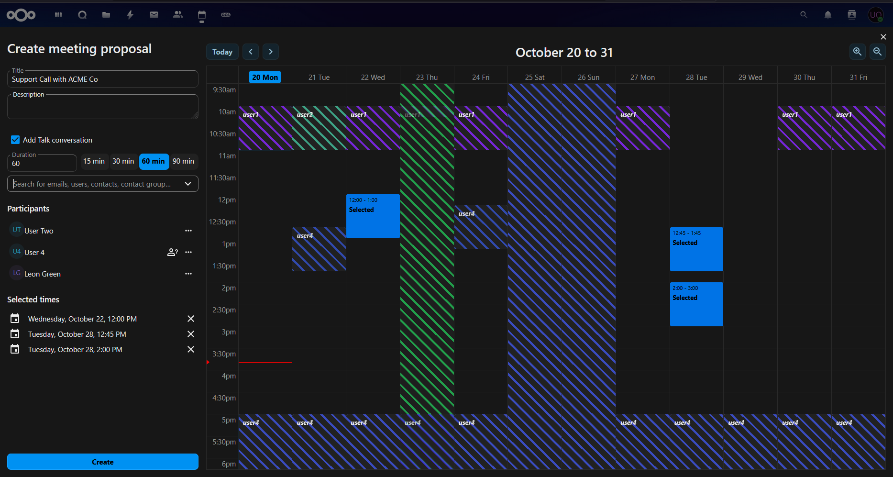
В редакторе предложений есть поля, как в редакторе событий: название, описание, место, продолжительность и выбор участников. Эти сведения сообщаются участникам вместе с предлагаемым временем.
Главное отличие — поле «Предлагаемое время»: в нём можно выбрать несколько вариантов времени встречи. Вариантов может быть сколько угодно, каждый можно изменить или удалить.
Когда все необходимые сведения (название, продолжительность, участники) заполнены и предлагаемое время выбрано, нажмите кнопку «Создать». Предложение будет сохранено, а выбранным участникам отправятся уведомления.
Редактирование предложения
Чтобы изменить предложение, нажмите трёхточечное меню рядом с ним в списке и выберите «Изменить». Откроется то же окно, что и при создании, но с заполненными сведениями.
После внесения изменений нажмите кнопку «Обновить», чтобы сохранить их. Всем участникам будут отправлены уведомления об обновлённом предложении.
Просмотр хода голосования
Ход голосования можно посмотреть, щёлкнув предложение в списке или выбрав «Просмотр» в трёхточечном меню. Откроется подробное представление предложения: все сведения и матрица времени и участников со всеми предложенными вариантами и ответами участников.
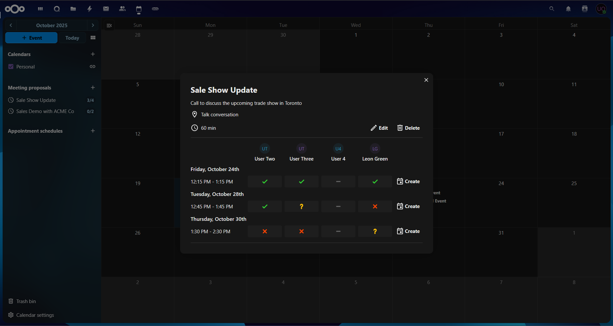
Здесь видно, какие участники ответили и каковы их предпочтения по каждому варианту времени. Также показывается общее число голосов за каждый вариант — это помогает выбрать лучшее время.
Изучив ответы участников, можно выбрать самое популярное время, нажав кнопку «Создать» в конце матрицы даты и участников. В календаре появится новое событие, а всем участникам уйдут уведомления о подтверждённом времени встречи.
Уведомления о предлагаемой встрече
Пользователи получают уведомления по эл. почте о событиях, связанных с предлагаемой встречей, в том числе:
При создании нового предложения
При обновлении предложения
При удалении предложения
При подтверждении окончательного времени встречи
Эти уведомления помогают участникам оставаться в курсе на всех этапах согласования.
Письма с уведомлениями содержат основные сведения о предлагаемой встрече: название, описание, место, продолжительность и предлагаемое время. В них также есть ссылка на страницу ответа, где участники видят все подробности и могут ответить на предложенное время.
Ответ на предложенную встречу
Чтобы ответить на предложенную встречу, участник переходит по ссылке в письме с уведомлением. Откроется подробное представление встречи: все предложенные варианты времени и ответы других участников. Для каждого варианта нужно выбрать свою доступность или предпочтение.
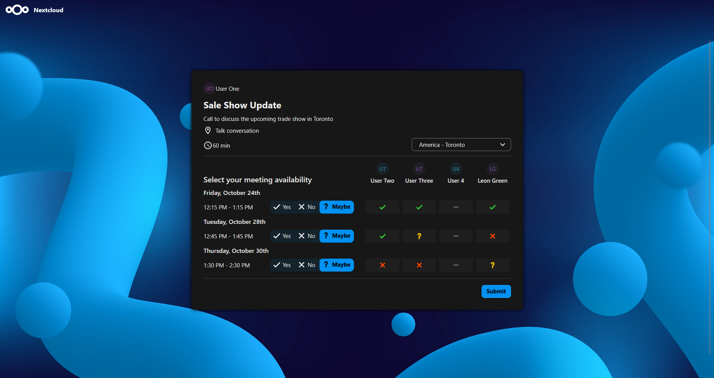
Доступность для каждого варианта времени выбирается в соответствующей строке матрицы времени и участников: «Да», «Нет» или «Возможно». Сделав выбор, нажмите кнопку «Отправить ответ», чтобы сохранить ответы.